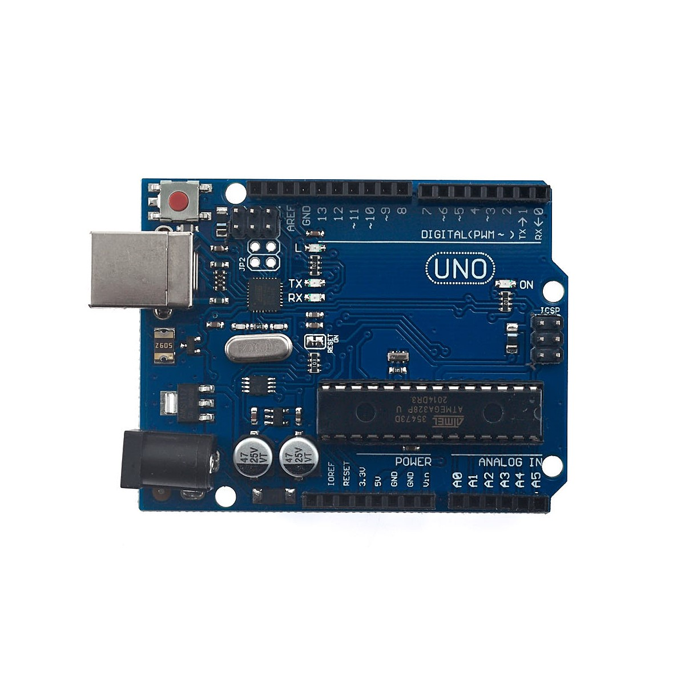
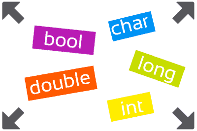
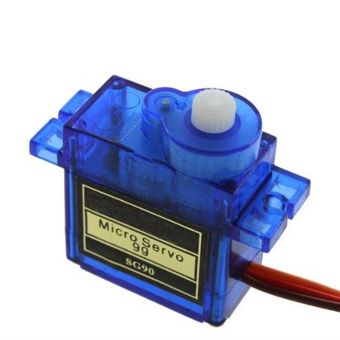
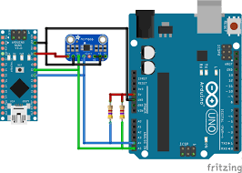
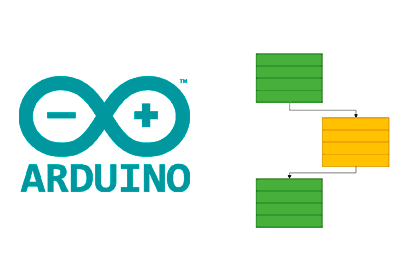

Principiante
Introducción a Arduino IDE
Conocé el entorno de desarrollo oficial, cómo configurar los puertos COM y compilar tu primer sketch básico.
Leer TutorialAprendé desde cero con guías estructuradas metódicamente por niveles de complejidad.

Conocé el entorno de desarrollo oficial, cómo configurar los puertos COM y compilar tu primer sketch básico.
Leer Tutorial
Estructurá eficientemente variables de tipo int, float, char y boolean para almacenar datos de sensores.
Leer Tutorial
Uso de la función analogRead() y mapeo de señales digitales obtenidas mediante potenciómetros de precisión.
Leer Tutorial
Manipulación angular precisa de servomotores utilizando la librería nativa servo.h mediante pulsos PWM.
Leer Tutorial
Cómo interconectar pantallas o sensores utilizando únicamente dos cables lógicos de datos: SDA y SCL.
Leer Tutorial
Optimización del microcontrolador utilizando rutinas ISR para detectar eventos externos instantáneos.
Leer Tutorial